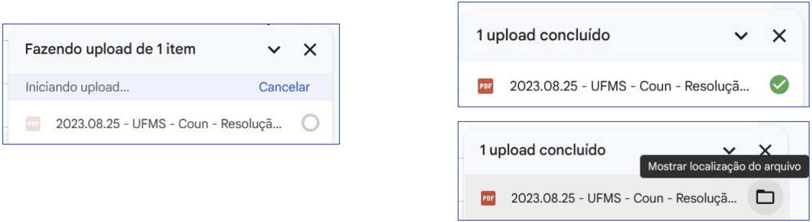
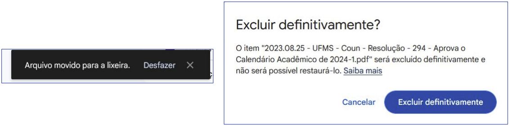

Disciplinas
INTERFACE HUMANO-COMPUTADOR-T01-2024-2 Concluído
Materiais
Vídeo 1 - [UFMS Digital] Interface Humano-computador - Módulo 2 - Unidade 2 sendProf.ª ministrante: Lucineide Rodrigues da Silva
Conteúdo
Princípios e diretrizes para o design de IHC
Princípios e diretrizes de design.
- Auxiliam o designer ao apontarem soluções para problemas comuns;
- Não devem substituir as etapas de análise, projeto e avaliação de IHC;
- Cada projeto possui suas particularidades;
- Aproveite os mapeamentos existentes no mundo real utilizados pelos usuários;
- Aproveite a ordem natural da interação do mundo real;
- Carrinho de compra;
- Sequência para realizar uma compra.
https://br.shein.com/
Simplicidade nas Estruturas das Tarefas:
- Estruture as tarefas para reduzir o trabalho do usuário com planejamento e resolução de problemas;
- Oferecer variadas formas de apoio ao aprendizado;
- Exibir informações de feedback;
- Automatizar a tarefa;
- Modificar a tarefa.
https://br.shein.com/
Equilíbrio entre Controle e Liberdade do Usuário:
- Estruture as tarefas para manter o usuário no controle;
- Projete restrições para que ele siga o caminho ‘correto’;
- Evite restrições que o mantenham em um único caminho para seguir;
- Ofereça saída, mas cuide para que ele não saia sem aviso;
- Permita o cancelamento ou o desfazer das tarefas.
- Estruture as tarefas para manter o usuário no controle;
- Projete medidas de segurança para evitar o acionamento por engano de ações que não puderem ser desfeitas;
- Estabeleça valores padrão úteis para o usuário.
https://br.shein.com/
Consistência e Padronização:
- Utilize ações, resultados das ações, layout de mensagens, visualização de informações.
- Ações parecidas devem funcionar de forma parecida;
- Botões com função igual devem ter rótulos iguais;
- Termos utilizados nas mensagens, menus e botões devem ser os mesmos;
- A inconsistência pode ser útil a depender do contexto;
https://docs.google.com
Promova a Eficiência do Usuário:
- Evite que o usuário fique parado esperando o processamento de uma tarefa;
- Evite que o usuário perca o trabalho realizado;
- Projete formas de executar as ações mais rápido.
https://docs.google.com
Antecipação:
- Ofereça ao usuário todas as ações e informações que ele precisa em cada atividade;
- Ofereça informações úteis;
- Faça mais do que apenas responder à pergunta do usuário.

https://br.shein.com/
Visibilidade e Reconhecimento:
- Mantenha visíveis e atualizados o estado do sistema, os objetos e as ações;
- Evite demandar que o usuário se lembre de informações de outra área do sistema que não esteja em uso;
- Ofereça feedback adequado e no tempo certo durante a execução de uma ação.
- Apresente mensagens de sucesso e ações rotineiras do sistema sutis;
- Dê ênfase em ações pouco frequentes e aquelas que trazem grandes consequências.
https://docs.google.com

https://docs.google.com

https://docs.google.com
Conteúdo Relevante e Expressão Adequada:
- Faça um projeto estético e minimalista;
- Construa mensagens concisas e informativas;
- Projete rótulos claros e sem ambiguidade;
- Mantenha o texto legível.
http://agenciadenoticias.ms.gov.br/
Projeto para Erros:
- Permita que ações possam ser revertidas;
- Dificulte a realização de ações irreversíveis;
- Ajude os usuários a reconhecerem, diagnosticarem e se recuperarem de erros;
- Diga o que aconteceu;
- Diga quais são as consequências do acontecimento;
- Diga como reverter as consequências indesejadas.
- Coloque as ações perigosas e pouco utilizadas longe daquelas que são frequentes.
https://github.com/DiSerafim
Projete para acessibilidade:
- Siga as recomendações da W3C ao projetar sistemas web;
- Inclua pessoas com deficiência e necessidades específicas no design de IHC.
http://agenciadenoticias.ms.gov.br/
Referências:
BARBOSA, Simone Diniz Junqueira; SILVA, Bruno Santana da. Interação Humano-Computador. Rio de Janeiro: Elsevier, 2010. Capítulo 8.